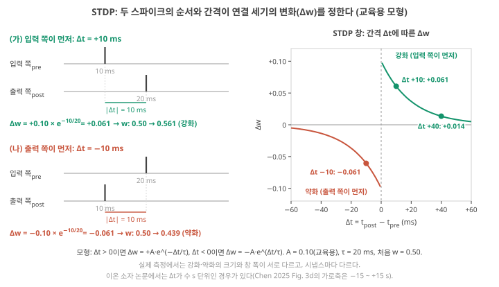
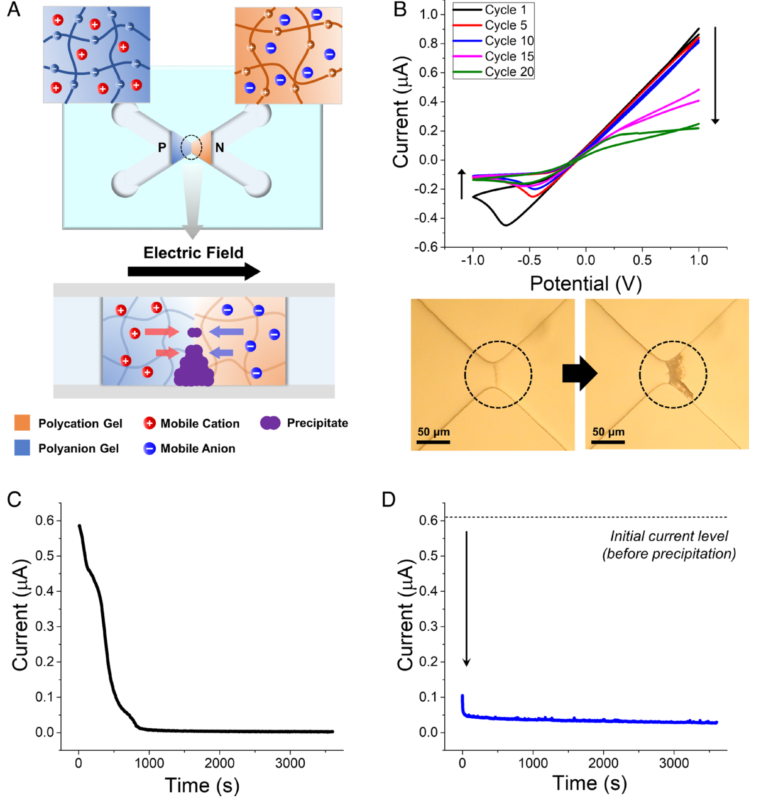
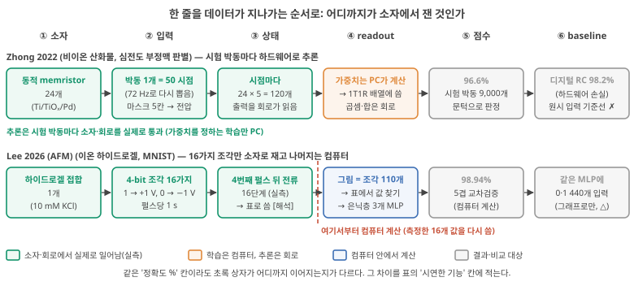
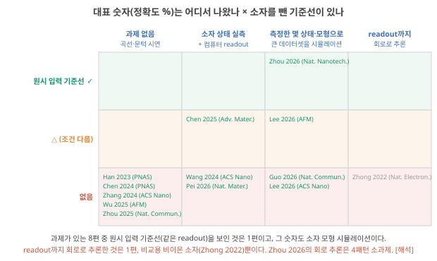
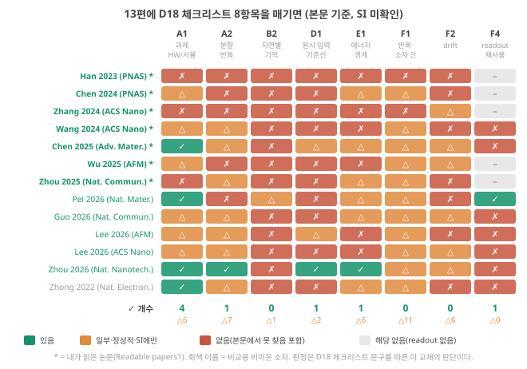
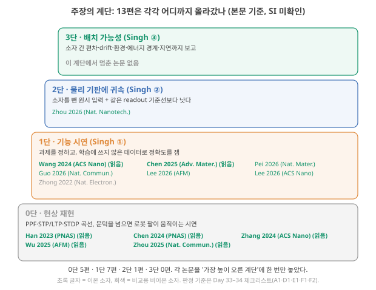

Day 48. 시냅스 모사·ionic reservoir computing 논문 읽기와 패턴
Phase 5 · 나는 무엇을 연구해야 하는가
이번 질문 대표 논문들의 곡선과 정확도 숫자는 무엇을 입증하고 무엇을 입증하지 못하나?
왜 배우나 (내 소재 연구와의 연결) 내 소재로 synapse 곡선(PPF, STDP, LTP/LTD)을 재면, 논문 초록에 '시냅스 모사'까지는 쓸 수 있지만 '계산 이득'이나 '저전력'은 쓸 수 없는 이유를 오늘 일곱 편·다섯 편에서 확인합니다. 내 결과를 쓸 때 어떤 추가 측정(원시 입력 기준선, device 간 편차, drift, 에너지 경계)이 먼저 필요한지 정하는 근거가 됩니다.
오늘의 장면 (입력 → 내부 변화 → 출력) STDP: 입력 쪽 스파이크와 출력 쪽 스파이크의 순서·간격(Δt) → 연결 세기 w가 커지거나 작아짐 → Δw 곡선. lookup RC 논문: 4-bit 조각 16가지를 device로 재 둠 → 컴퓨터가 표를 찾아 MNIST 계산 → 정확도 숫자(device가 실시간 처리한 것이 아님).
오늘 반드시 시냅스 곡선이 입증하는 것은 '이력 의존 응답과 시간척도'이고 계산 이득이 아니다. 정확도 숫자는 device가 처리했는지, 측정한 16상태로 컴퓨터가 계산했는지(lookup)부터 가려야 한다.
나중에 더 봐도 되는 것 STDP 식의 상수 값(교육용 A, τ), 일곱 편·다섯 편 줄의 세부 숫자와 쪽수, 영상, 이식 논문의 세부 판정(Day 51–52에서 다시 나옴).
다음으로 넘어가는 기준 '오늘 반드시'를 내 말로 한두 문장 말할 수 있으면 됩니다. 나머지는 뒤의 Day에서 다시 나옵니다.
이후 쓰이는 곳 Day 49–50 처리율과 fJ 숫자의 전압 조건, Day 51–52 이식 논문(급성 실험·꺼내서 측정), Day 53–56 내 device의 원시 입력 기준선·device 간 편차를 재는 최소 실험
지난 학습 복습
지난 학습 단위(Day 47 · 논문 평가 표와 연구 지도)의 핵심을 다른 예로 확인합니다. 고르는 즉시 맞았는지와 이유가 보입니다. 틀려도 아래 학습자료는 그대로 열려 있고, 틀린 문제에는 다시 볼 곳이 붙습니다.
학습자료
3. 시냅스 모사 논문 일곱 편: 곡선은 무엇을 입증하나
상황. 새 하이드로겔 논문의 초록에 "synapse를 모사했다, fJ 수준, MNIST 95%"라고 적혀 있습니다. 내 소재 논문에서 같은 문장을 쓰려면 어떤 측정까지 있어야 할까요? 이 구간은 내가 읽은 일곱 편으로 "곡선이 있다"와 "계산 이득이 있다"를 가르는 연습입니다.
끝나면 할 수 있는 것. 내가 읽은 일곱 편(Readable papers1)의 표 줄을 채우고, 이 논문들이 확실히 입증한 것(이력 의존 응답, 시간척도의 폭, 크기로 τ 조절)과 입증하지 않은 것(계산 이득, 시스템 에너지, device 간 재현성)을 구별해 말할 수 있다.
내가 읽은 논문부터 표에 넣습니다. 앞에서 만든 논문 평가 표(device class·시연한 기능·지표·baseline·빠진 것의 다섯 칸, 표 읽고 채우는 법)와 주장의 계단(0 현상 재현 → 1 기능 시연 → 2 물리 기판에 귀속 → 3 배치 가능성, 주장의 계단)을 그대로 씁니다.
순서는 이렇습니다. 표의 "시연한 기능" 칸에 가득한 시냅스 용어를 먼저 정리하고, 일곱 편의 표를 읽은 뒤, 이 논문들이 확실히 입증한 것과 입증하지 않은 것을 가릅니다.
3-1. 표에 나오는 시냅스 용어
짧은 간격의 두 펄스. 펄스 두 개를 짧은 간격으로 주었을 때 둘째 응답이 첫째보다 크면 PPF(paired-pulse facilitation, 촉진), 작으면 PPD(paired-pulse depression, 억제)입니다. 간격을 늘려 가며 그린 곡선에서 시간상수(남은 효과가 약 0.37배로 줄어드는 데 걸리는 시간 τ)를 읽는다는 것, 그리고 이 곡선만으로는 계산을 증명하지 못한다는 것을 Day 10에서 봤습니다(Day 10 기초: PPF·STP·LTP, Day 10: PPF 곡선의 한계).
오래 남는 변화와 금방 돌아오는 변화. Day 5–6에서 본 장기 강화(long-term potentiation, LTP)는 함께 활동한 연결이 오래 강해지는 현상이었고, 장기 약화(long-term depression, LTD)는 연결이 오래 약해지는 현상입니다(Day 6: 가소성). STP는 짧게 남았다가 원래로 돌아오는 변화입니다. Day 10에서는 short-term potentiation(단기 강화)의 약자로 썼고, 논문에 따라 short-term plasticity(단기 가소성, 강화와 약화를 함께 부르는 말)의 약자로도 씁니다. 어느 쪽이든 '짧다/길다'를 가르는 기준 시각은 정해져 있지 않고 논문마다 다릅니다(Day 10 기초). device 논문은 이 이름들을 "펄스를 줄 때마다 conductance나 응답이 오르내리고, 그 변화가 얼마나 오래 남나"를 잰 곡선에 빌려 씁니다. 이름은 같아도 생물의 기전(수용체 수의 변화)과 device의 기전(이온의 이동·침전 등)은 다릅니다.
두 신호의 순서와 빈도. 남은 두 용어 STDP와 SRDP는 "언제 강해지고 언제 약해지나"를 정하는 규칙입니다. SRDP(spike-rate-dependent plasticity)는 펄스가 오는 빈도에 따라 강화와 약화가 갈리는 규칙입니다. STDP는 신호 두 개의 시각을 함께 봐야 해서 아래 기초 상자에서 따로 풉니다.
STDP: 두 스파이크의 순서와 간격이 강화·약화를 정한다
① 무엇을 하려는 규칙인가. LTP는 "함께 활동한 연결이 강해진다"였습니다. 그런데 '함께'를 ms 단위로 쪼개 보면 순서가 생깁니다. 입력 쪽 세포가 먼저 신호를 보내고 곧바로 출력 쪽 세포가 발화했다면, 그 입력이 출력을 일으키는 데 보탰을 수 있습니다. 반대로 출력 쪽이 먼저 발화한 뒤 입력이 왔다면, 그 입력은 이번 출력에 보태지 못했습니다. STDP(spike-timing-dependent plasticity, 스파이크 시각 의존 가소성)는 앞의 경우 연결을 키우고 뒤의 경우 줄이는 규칙입니다. "원인이 된 연결을 키운다"는 이 풀이는 흔히 쓰이는 해석입니다. 해석
② 무엇으로 이루어지나. 연결(시냅스) 하나와 그 양쪽의 세포 둘입니다. 시냅스 앞(pre, 입력 쪽) 세포와 시냅스 뒤(post, 출력 쪽) 세포가 각각 스파이크(짧은 전압 펄스, Day 5: ANN과 SNN)를 내고, 그 시각을 \(t_{pre}\), \(t_{post}\)라고 씁니다. 두 시각의 차이가 간격 \(\Delta t = t_{post} - t_{pre}\)입니다. \(\Delta t > 0\)이면 입력 쪽이 먼저, \(\Delta t < 0\)이면 출력 쪽이 먼저입니다. 연결의 세기는 weight \(w\)(입력에 곱하는 숫자, Day 3 기초)이고, 스파이크 한 쌍이 만든 변화가 \(\Delta w\)입니다. 논문마다 \(\Delta t\)의 부호를 반대로 정의하기도 하므로(예: Song 2000은 \(t_{pre} - t_{post}\)), 그래프를 읽을 때는 가로축의 정의부터 확인합니다.
기호 주의. 여기서 \(\Delta t\)는 두 스파이크 시각의 차이이고, 부호(+/−)가 순서를 뜻합니다. 앞에서 쓴 leak 한 칸 뒤의 남는 비율 \(d = e^{-\Delta t/\tau}\)(Day 5–6·Day 15–16·Day 23–24)에서 \(\Delta t\)는 계산 한 칸의 시간 간격(늘 양수)이었습니다(Day 45–46는 이 기호와 겹치지 않게 수송수 차를 \(\delta\)로 썼습니다). 또 아래 식의 \(\tau\)는 device가 이완하는 시간상수가 아니라 STDP 창의 폭입니다. 다만 식의 꼴 \(e^{-|\Delta t|/\tau}\)가 같아서, '간격이 τ만큼 길어질 때마다 남는 몫이 약 0.37배'라는 읽는 법은 같습니다.
③ 그림으로 먼저: 간격을 바꾸면 무엇이 변하나.
입력 쪽이 10 ms 먼저 올 때와 10 ms 늦게 올 때, 연결 세기의 변화는 크기와 방향이 각각 어떻게 다를까요? 간격을 40 ms로 늘리면 어떻게 될까요? 먼저 짐작한 뒤 그림 4를 보세요.
그림 4(a)의 (가)·(나)는 같은 10 ms 간격에서 순서만 바꾼 두 시간선이고(세로 막대가 스파이크), 그림 4(b)는 가로축 \(\Delta t\), 세로축 \(\Delta w\)의 창 곡선입니다. (b)에서 세로 점선(\(\Delta t = 0\))의 오른쪽이 '입력 쪽이 먼저', 왼쪽이 '출력 쪽이 먼저'입니다.

그림을 따라 읽으면, 입력 쪽이 먼저이고 간격이 짧을수록 강화가 크고((b)의 오른쪽 위 초록), 출력 쪽이 먼저이고 간격이 짧을수록 약화가 큽니다((b)의 왼쪽 아래 빨강). 간격이 길어지면 어느 쪽이든 변화가 0에 가까워집니다. 이 규칙을 생물에서 체계적으로 잰 Bi와 Poo(1998, 배양한 해마 뉴런)는 출력 쪽 발화가 입력 뒤 20 ms 안에 반복되면 LTP가, 입력 앞 20 ms 안에 반복되면 LTD가 생겼다고 보고했습니다(초록).
④ 출력: 식 하나. 이 모양을 흔히 지수 함수 두 개로 적습니다.
\[\Delta w = \begin{cases} +A\,e^{-\Delta t/\tau} & (\Delta t > 0) \\ -A\,e^{\Delta t/\tau} & (\Delta t < 0) \end{cases}\]
\(A\)는 간격이 0에 가까울 때의 최대 변화(\(w\)와 같은 척도, 단위 없음), \(\tau\)는 시간 창의 폭(ms)입니다. \(e^{-\Delta t/\tau}\)는 간격이 τ만큼 길어질 때마다 남는 몫이 약 0.37배(\(1/e\))로 줄어드는 감쇠로, Day 10의 PPF 식과 같은 꼴입니다. Song·Miller·Abbott(2000)의 모형은 τ = 20 ms를 썼고, 약화 쪽 A를 강화 쪽보다 5% 크게 두었습니다. 아래 예제의 A = 0.10은 변화가 눈에 보이게 크게 잡은 교육용 값입니다.
그림 4(a)의 점 두 개와 간격이 긴 한 점을 계산으로 다시 얻기. 처음 weight w = 0.50, A = 0.10, τ = 20 ms입니다.
단계 1 — 간격을 τ로 나눈다. |Δt| = 10 ms, τ = 20 ms이므로 |Δt|/τ = 0.5이고, \(e^{-0.5} \approx 0.607\)입니다. 간격이 τ의 절반이라 최대 변화 A의 약 61%가 남습니다.
단계 2 — Δt = +10 ms (입력 쪽이 먼저). 입력 쪽 스파이크가 10 ms, 출력 쪽이 20 ms에 옵니다. 강화 쪽 식: Δw = +0.10 × 0.607 = +0.061. w는 0.50 → 0.561.
단계 3 — Δt = −10 ms (출력 쪽이 먼저). 입력 쪽이 20 ms, 출력 쪽이 10 ms. 간격의 크기는 같지만 약화 쪽 식을 씁니다: Δw = −0.10 × 0.607 = −0.061. w는 0.50 → 0.439. 간격이 같아도 순서만 바뀌면 변화의 방향이 반대입니다.
단계 4 — 간격이 길면. Δt = +40 ms면 40/20 = 2, \(e^{-2} \approx 0.135\), Δw = +0.10 × 0.135 ≈ +0.014. 같은 순서라도 간격이 τ의 두 배면 변화가 10 ms일 때의 약 0.22배(4–5분의 1)로 줄어듭니다. "간격이 길수록 변화가 작아진다"를 숫자로 본 것입니다.
이온 device 논문에서는. 2단자 device에는 세포가 없으므로, 입력 쪽 스파이크와 출력 쪽 스파이크를 같은 device에 거는 두 전압 펄스로 흉내 내고, Δw는 device 응답(전류·전압)의 변화로 잽니다. 표의 Chen 2025가 그렇게 했습니다. 입력 쪽 세포의 발화는 약한 양의 전압 펄스로, 출력 쪽 세포의 발화는 약한 음의 전압 펄스로 흉내 냈고 Chen 2025, p.6, 원문 그래프의 가로축 Δt는 −15 s부터 +15 s까지, 세로축은 응답 전압의 변화(V)입니다. 생물의 창(수십 ms)보다 수백 배 넓습니다. 해석 그리고 이 곡선은 계단의 0단(현상 재현)입니다. 규칙의 모양을 재현했을 뿐, 그 규칙으로 무엇을 학습시켜 과제를 푼 결과는 아닙니다. "device로 STDP 곡선을 그렸다"와 "그 device들로 STDP 학습을 하는 회로를 만들었다"는 다른 주장입니다.
3-2. 일곱 편의 표
일곱 편은 모두 이온이 움직이는 연성 소재(하이드로겔, 이온겔, 폴리전해질 겔, 겔 전해질 섬유)로 만든 2단자 device이고, 이력에 따라 응답이 달라지는 거동을 보입니다. 이 거동의 물리(전기이중층 충전, 농도 분극과 이온 고갈(depletion), 전기화학 반응, 침전(precipitation))는 Phase 4에서 봤습니다. 짧게 다시 말하면, 전극이나 접합 계면에 이온이 모였다 흩어지는 데 시간이 걸리고(Day 37 기초: EDL), 그 시간은 이온이 움직여야 하는 거리의 제곱에 비례합니다(Day 39 기초: 확산 시간). 극성이 반대인 고분자 전해질을 맞붙인 접합에서는 한쪽 방향 전압이 계면의 이온을 비워(고갈) 전류를 막습니다(Day 45 기초: 폴리전해질 접합).
표를 읽기 전에, 처음 나오는 말. 표 칸에 짧게 적힌 말들이고, 읽다가 막히면 돌아와 찾아보면 됩니다.
- 정류비: 같은 크기의 순방향·역방향 전압에서 흐르는 전류의 비(Day 45: 정류비).
- 고역 통과(high-pass): 빠른 변화(짧은 간격의 펄스)에는 크게, 느린 변화에는 작게 반응하는 성질(Day 27: 네 가지 filter).
- 개방 전압: 전류를 흘리지 않고 잰 두 전극 사이의 전압.
- fJ(펨토줄) = \(10^{-15}\) J, pJ(피코줄) = \(10^{-12}\) J.
- MNIST: 손글씨 숫자 그림(0–9)을 알아맞히는 벤치마크(Day 27: 벤치마크란 무엇인가).
- 합성곱(convolution): 작은 무늬 검출기를 그림 전체에 밀며 곱해 더하는 계산. 그렇게 뽑아 둔 숫자들이 특징(feature).
- SVM: 두 무리 사이에 여유가 가장 넓은 경계를 긋도록 학습하는 선형 분류기.
- MLP(다층 신경망): 곱해서 더하기와 S자 함수를 여러 층 쌓은 readout. 입력과 출력 사이의 층이 은닉층(hidden layer)(Day 11 기초).
- N-back: 지금 자극이 n단계 전 자극과 같은지 맞히는 기억 과제.
표 읽는 법 — 잰 것과 주장한 것. "지표" 칸은 device에서 실제로 잰 숫자와 그 조건, "시연한 기능" 칸은 논문이 보였다고 말하는 기능, "빠진 것" 칸은 그 기능을 계산의 증거로 쓰려면 필요한데 이 교재가 본문·캡션·Methods에서 찾지 못한 것입니다(SI 미검토. 그 논문이 하지 않았다는 확인이 아닙니다). 인용하기 전에 붙은 쪽수를 원문에서 확인하세요.
첫 줄을 말로 풀어 보기(Han 2023). device class는 "폴리음이온·폴리양이온 겔을 맞붙인 이온 다이오드", 시연한 기능은 "침전으로 전류가 줄고(LTD) 용해로 되돌아옴(LTP)", 지표는 "1,000 s 안에 0.6 µA → 3 nA", baseline은 "과제가 없어 비교할 계산 결과가 없음", 빠진 것은 "과제·readout·에너지·device 간 통계"입니다. 즉 이 줄은 계단 0단(현상 재현)이고, 이 논문을 근거로 "계산을 한다"고는 쓸 수 없습니다. 나머지 여섯 줄도 같은 순서로 읽으면 됩니다.
일곱 편 가운데 다섯 편은 과제를 풀지 않았고(곡선과 문턱 시연), 과제가 있는 두 편(Wang 2024, Chen 2025)은 측정한 device 상태를 컴퓨터의 readout에 넣었습니다. 앞에서 본 여섯 단계(device → 입력 → 상태 → readout → 점수 → baseline)의 말로 하면, Zhong 2022는 device·회로에서 실제로 일어난 일(초록)이 readout의 곱셈·합까지 이어졌지만, 이 두 편은 초록이 '상태' 단계에서 끝납니다.
| 논문 | 읽음 | device class | 시연한 기능 | 지표 (원문 단위) | baseline | 빠진 것 (본문 검토 범위에서 미보고, SI 미검토) |
|---|---|---|---|---|---|---|
| Han 2023 (PNAS) | ✓ | 수계 폴리전해질 하이드로겔 이온 다이오드, 저장조에서 BaSO₄가 침전·용해 | 침전으로 장기 약화(LTD), 용해로 장기 강화(LTP), 짧은 간격 펄스에 더 크게 반응(고역 통과), 입력 셋의 합산 | 1,000 s 안에 0.6 µA → 3 nA Han 2023, p.3; 강화·약화 단계 2,000 s Han 2023, p.7 | 과제 없음. 메커니즘 대조(침전하지 않는 염) | 과제·readout 전체, 에너지, device 간 통계(정류비 >10인 device만 골라 씀 Han 2023, p.9) |
| Chen 2024 (PNAS) | ✓ | 탄소나노튜브 섬유 위 TiO₂·Co-MoS₂ 전극 + Zn²⁺ 겔 전해질(전극 산화환원) | 단기 가소성, PPF, 화학·빛 입력, 세 갈래 병렬 전달, AND/OR, 섬유 근육 구동 | 사건당 0.291·0.074 fJ (−10 µV 자극) Chen 2024, p.6; 약 6 s 안에 기저선으로 Chen 2024, p.6; PPF 128 → 107% | 다른 논문의 에너지 숫자와 비교 | 과제 지표, 시스템 에너지, device 간 편차 |
| Zhang 2024 (ACS Nano) | ✓ | 평면 미세유체 P–M–N 폴리전해질 겔 바이폴라 memristor | 강화·약화 펄스열, 크기에 따라 기억 시간이 변함 | 기억 시간 200–4,000 s, device 크기로 조절 Zhang 2024 (ACS Nano), p.15025, 15029 | 과제 없음 | 과제, 배열("다음 목표는 작은 집적 회로" Zhang 2024 (ACS Nano), p.15032), 에너지 |
| Wang 2024 (ACS Nano) | ✓ | 중성/양이온/중성 하이드로겔 3층(1 M KCl), ITO 전극, 개방 전압 출력 | PPD·PPF·LTD·LTP, 3×3 저장, MNIST 95.0% | 시험 표본 50개 Wang 2024 (ACS Nano), p.29709; 75%를 학습에 Wang 2024 (ACS Nano), p.29710 | 찾지 못함 | 합성곱으로 뽑은 특징을 넣음 Wang 2024 (ACS Nano), p.29710 → 전처리의 기여 미분리; 에너지 |
| Chen 2025 (Adv. Mater.) | ✓ | 전기방사 이온겔 나노섬유 2층(이온액체/PAMPS), 6개 device가 막 하나 공유 | PPF, STDP, MNIST RC, 9가지 공간 패턴, n-back | 6 fJ/event (0.5 pA로 20 mV 응답) Chen 2025, p.5; MNIST 88% 넘음 Chen 2025, p.8; 80%를 학습에 Chen 2025, p.10 | SVM 선형 분류 (입력이 무엇인지 본문에서 찾지 못함) Chen 2025, p.7 | 시스템 에너지, 동적 응답의 device 간 편차; n-back은 readout(MLP)이 n단계를 한꺼번에 봄 Chen 2025, p.10 |
| Wu 2025 (AFM) | ✓ | 자가발전 LiCl 2층 하이드로겔(한 층에 MXene), 압전이온·열확산 전압 | 압력·빛 PPF, 반복 학습, 문턱 셋으로 로봇 팔 제어 | 검출 한계 3.6 kPa, 35.7 mW cm⁻² Wu 2025, p.1; 에너지 숫자 찾지 못함 | 찾지 못함 | 과제 지표, 에너지; 저자 스스로 "기능 수준의 모사"라고 씀 Wu 2025, p.6 |
| Zhou 2025 (Nat. Commun.) | ✓ | 이온겔 2층 접합(양이온성 블록 + 중성 블록), 계면 이온 고갈층 | PPF, 민감화·습관화, 조건반사, 단기→장기 기억, 3×3 저장, 로봇 팔 문턱 | τ₁·τ₂ 52·395 ms Zhou 2025, p.4; τ 19.3 → 259 s Zhou 2025, p.6; 0.06 pJ/spike (면적 150 mm²) Zhou 2025, p.5 | 재료 대조(작용기를 뺀 이온겔) | 과제, device 간 편차, 에너지 경계 |
원문 그림 읽는 법(아래 Han 2023 Fig. 1): 표의 첫 줄을 그림으로 봅니다. 왼쪽 A가 device의 구조와 원리, 오른쪽 B가 전압을 되풀이해 훑을 때의 전류–전압 곡선과 접합의 현미경 사진, 아래 C·D가 시간에 따른 전류입니다. B의 화살표 방향(+1 V 쪽 전류가 회차마다 줄어듦)과 아래 사진의 갈색 덩어리를 짝지어 보세요. 일곱 편 가운데 상태변수(침전물)를 눈으로 볼 수 있는 드문 예입니다.

생물의 원래 현상(선택 영상). 표 첫 줄 Han 2023이 침전으로 흉내 낸 '장기 약화(LTD)'가 생물에서는 무엇인지 보고 싶다면 아래 2분 영상을 보세요.
3-3. 이 일곱 편이 확실히 입증한 것
세 가지를 원문 그대로 받아들일 수 있습니다. (1) 서로 다른 메커니즘(침전, 산화환원, 계면 이온 고갈, 이중층)의 연성 이온 소재가 이력 의존 응답을 낸다. (2) 그 시간척도가 수십 ms(Zhou 2025의 52 ms)부터 수천 s(Zhang 2024의 4,000 s)까지 넓다. (3) 적어도 한 device에서는 device 크기로 기억 시간을 조절할 수 있다. Zhang 2024는 device 크기(겔 영역 전체 길이 1.5 mm와 4.3 mm)를 바꿔 기억 시간을 200 s에서 4,000 s로 옮겼고 Zhang 2024 (ACS Nano), p.15029, 그 변화가 균일 물질의 확산 예측(\(\tau \propto L^2/D\))보다는 덜 가팔랐다고 시뮬레이션으로 보였습니다 Zhang 2024 (ACS Nano), p.15030. 이것은 "τ를 설계 변수로 다룰 수 있다"는 Phase 4의 주장에 가장 직접적인 폴더 근거 중 하나입니다.
3-4. 입증하지 않은 것과 두 함정
입증하지 않은 것. 체크리스트로 보면 빈칸이 같은 자리에 반복됩니다.
- 계산 이득. 다섯 편은 과제가 없고(0단), 과제가 있는 두 편(Wang 2024, Chen 2025)도 device를 뺀 원시 입력 + 같은 readout 기준선을 본문에서 찾지 못했습니다. Chen 2025의 SVM 비교는 방향은 맞지만 SVM에 무엇을 넣었는지가 본문에 없어 △입니다.
- 시스템 에너지. fJ(펨토줄, 10⁻¹⁵ J) 숫자는 모두 device에 들어간 자극 에너지를 계산한 것입니다. 그리고 그 숫자가 어떤 입력 크기에서 나왔는지가 중요합니다. Chen 2024의 0.074 fJ는 −10 µV 자극에서 계산한 값입니다 Chen 2024, p.6. 과제를 푸는 다른 논문들이 쓰는 ±1 V 펄스(뒤에서 볼 Lee 2026 (AFM), Guo 2026)는 −10 µV보다 10만(10⁵) 배 큰 전압입니다. 펄스 하나의 에너지는 전압 × 전류 × 시간이고(Day 4 기초: 에너지와 전력), 저항이 그대로라면 전류도 전압에 비례하므로(Ohm 법칙) 에너지는 전압의 제곱에 비례합니다. 그러면 같은 device·같은 펄스 길이에서 에너지는 약 10¹⁰배, 0.074 fJ는 약 0.7 µJ가 됩니다. 이온 device의 전류는 전압에 정비례하지 않으므로 정확한 배수가 아니라 자릿수 감각입니다. 해석 측정 장비와 readout은 모두 경계 밖입니다(Day 49–50에서 계산).
- device 간 재현성. 같은 device의 반복은 있어도, 명목상 같은 device 여러 개의 동적 응답(τ, 펄스당 변화)의 편차를 본문에 보인 논문은 일곱 편 중에 찾지 못했습니다(SI 미검토). Wu 2025는 여러 device의 응답 크기가 비슷하다는 것을 보충 자료로 보였습니다 Wu 2025, p.3.
두 가지 함정을 짚어 둡니다. 첫째, Wang 2024의 MNIST 95.0%는 28×28 그림에서 합성곱 처리로 특징을 먼저 뽑고 그 특징을 전류 펄스로 넣은 결과입니다 Wang 2024 (ACS Nano), p.29710. 합성곱(작은 무늬 검출기를 그림 전체에 밀며 곱해 더하는 계산)은 그 자체로 강력한 특징 추출이라, device 없이 그 특징만으로 몇 %가 나오는지 모르면 device의 몫을 알 수 없습니다. 시험 표본 50개도 적습니다(한 개를 틀리면 2%p). 둘째, Chen 2025의 n-back(지금 자극이 n단계 전 자극과 같은지 맞히기) 94%는 readout인 다층 신경망이 n단계의 데이터를 한꺼번에 입력으로 받아 낸 값입니다 Chen 2025, p.8, 10. 그렇다면 "n단계 전을 기억한" 것이 device인지 readout인지 가를 수 없습니다. 해석 Day 27–28에서 던진 "readout이 일을 다 하는 것 아닌가"(readout이 과제를 풀어 버려 device의 몫이 안 보이는 경우, Day 28: readout이 일을 하나)라는 질문이 그대로 적용됩니다.
"fJ 시냅스이니 저전력 뉴로모픽이다" — fJ는 device 하나에 µV–mV 자극을 줄 때 계산한 에너지입니다. 같은 device를 계산 과제에서 쓰는 전압, 상태를 읽는 증폭기와 ADC(아날로그 값을 숫자로 바꾸는 변환기, Day 7: DAC와 ADC — 숫자와 전압 사이의 변환), readout 계산은 그 숫자에 들어 있지 않습니다. 이 문장을 쓰려면 시스템 경계의 에너지가 필요합니다(Day 31 기초: 시스템 비용).
- 일곱 편이 입증한 것: 연성 이온 소재의 이력 의존 응답, 수십 ms–수천 s의 시간척도, 크기로 기억 시간 조절(200–4,000 s) Zhang 2024 (ACS Nano), p.15029.
- 입증하지 않은 것: 계산 이득(본문에서 원시 입력 기준선을 찾은 논문 0편), 시스템 에너지(fJ는 µV–mV 자극의 device 에너지, 예: −10 µV에서 0.074 fJ Chen 2024, p.6), 동적 응답의 device 간 편차.
- 함정: 합성곱 특징을 넣은 MNIST Wang 2024 (ACS Nano), p.29710, n단계를 한꺼번에 보는 readout의 n-back Chen 2025, p.10.
- STDP: \(\Delta t = t_{post} - t_{pre}\)가 +면 강화, −면 약화, 간격이 길수록 변화가 0에 가깝다(교육용 A = 0.10, τ = 20 ms에서 ±10 ms → ±0.061). device의 STDP 곡선은 수 s 창의 현상 재현(0단)이다 Chen 2025, p.6.
4. 이온 RC 논문: 정확도 숫자는 어디서 나왔나
이 구간을 읽고 나면 "측정한 몇 개 상태로 큰 데이터셋을 계산한다"(lookup 방식)가 무엇이고 왜 표에 따로 적어야 하는지 작은 숫자로 설명하고, 이온 RC 논문 다섯 편의 줄을 채울 수 있다.
이제 과제를 풀었다고 주장하는 이온 device 논문들입니다. 이 줄들에서는 시연 기능 칸에 한 가지를 꼭 적어야 합니다. 정확도 숫자를 만든 계산이 실제로 어디서 일어났나. device가 그 데이터를 하나하나 다 처리했나, 아니면 device의 응답을 몇 개 재 두고 나머지는 컴퓨터가 했나.
4-1. Lookup 방식: 16개의 숫자로 7만 장을 계산하기
여러 논문이 같은 방법을 씁니다. 손글씨 그림(MNIST)을 흑백 점 0과 1의 줄로 펴고, 4개씩 끊습니다. 4개짜리 0·1 조합은 0000부터 1111까지 16가지뿐입니다. device에 이 16가지 펄스열을 한 번씩(또는 몇 번씩) 넣어 마지막 전류를 재 두면, 어떤 그림이든 "4개씩 끊어서, 각 조각을 그 조각의 측정 전류로 바꾸는" 계산을 컴퓨터가 표를 찾아보며(lookup) 할 수 있습니다. 그렇게 만든 숫자 목록을 컴퓨터의 readout에 넣어 학습하고 시험합니다. 이 방식에서 device가 한 일은 "16가지 조합을 숫자 16개로 바꾸는 표 하나"이므로, device의 기여를 보려면 같은 readout에 0–15 정수를 넣은 기준선과 견줘야 합니다(아래 단계 5). 해석
단계 1 — 그림을 조각으로. Lee 2026 (AFM)은 MNIST 그림을 22×20 흑백 점으로 줄여 440개의 0·1로 펴고 Lee 2026 (AFM), p.8, 이것을 4개씩 끊어 그림 하나를 조각 110개로 만듭니다 Lee 2026 (AFM), p.5.
단계 2 — 조각을 펄스로. 1은 +1 V, 0은 −1 V를 0.75 s 걸고 0.25 s 쉽니다. 즉 펄스 하나에 1 s, 4개짜리 조각 하나에 4 s입니다 Lee 2026 (AFM), p.4–5. 네 번째 펄스 뒤의 전류가 16가지 조각마다 뚜렷이 다른 16단계로 나왔습니다 Lee 2026 (AFM), p.4.
단계 3 — device 하나가 다 처리한다면 걸리는 시간. 그림 하나: 4 s × 110 조각 = 440 s. MNIST 전체 7만 장: 440 × 70,000 = 30,800,000 s. 하루는 86,400 s이므로 30,800,000 ÷ 86,400 ≈ 356일입니다.
단계 4 — 그래서 무엇을 확인해야 하나. device 하나로 1년 가까이 쉬지 않고 측정했을 가능성은 낮습니다. 본문은 "각 조각을 펄스로 device에 걸었다"고 쓰지만 Lee 2026 (AFM), p.8, 몇 장을 실제로 device에 통과시켰는지는 적혀 있지 않습니다. 그렇다면 측정한 16단계를 표로 써서 나머지를 계산했을 가능성이 큽니다. 해석 Guo 2026은 이 점을 분명히 씁니다. 원문 Fig. 6a의 16가지 conductance(전류가 얼마나 잘 흐르는가, 저항의 역수)를 바탕으로 신경망을 "in silico로(컴퓨터 안에서)" 학습하고 시험해 89.5%를 얻었다는 것입니다 Guo 2026, p.9.
단계 5 — lookup이 바꾸는 것. lookup 방식에서 device가 한 일은 "4개짜리 0·1 조합 16가지를 서로 다른 숫자 16개로 바꾸는 표 하나"입니다. 그런데 0000–1111을 0–15의 정수로 바꾸는 것도 16개짜리 표입니다. 그러니 이 방식의 공정한 기준선은 "같은 readout에 0–15 정수(또는 원래 0·1)를 넣은 것"이고, device 표가 그보다 나아야 device의 기여입니다. 해석 또 같은 조각은 언제나 같은 숫자로 바뀌므로, 실제 device의 반복 흔들림·drift·device 간 편차는 결과에 거의 들어가지 않습니다(Day 33–34).
lookup 방식이 잘못은 아닙니다. device의 비선형 응답을 빠르게 평가하는 합리적인 방법입니다. 다만 표의 "시연한 기능" 칸에 "측정한 16상태로 시뮬레이션"이라고 적어야, 같은 표의 "하드웨어로 실시간 처리"(Zhong 2022)와 같은 무게로 읽히지 않습니다.
4-bit 조각 하나에 device 시간 0.4 s가 들고 그림 하나가 조각 196개라면, MNIST 7만 장을 device 하나로 다 처리하는 데 며칠이 걸릴까요? 아래 점검의 첫 문제는 본문 숫자의 확인, 둘째는 일부가 비어 있고, 셋째는 혼자 풉니다.
4-2. 다섯 편의 줄
표를 읽기 전에, 처음 나오는 말. 이것도 막히면 돌아와 찾아보면 됩니다.
- Memcapacitor: 이력에 따라 저항 대신 용량(전하를 담는 능력)이 바뀌는 device.
- MLP와 은닉층: MLP는 곱해서 더하기와 S자 함수를 여러 층 쌓은 readout이고, 입력과 출력 사이의 층이 은닉층입니다(앞의 용어 목록).
- 1 epoch: 경사 하강(gradient descent, Day 14 기초)으로 조금씩 고쳐 가며 학습할 때 학습 데이터 전체를 한 번 다 훑는 것.
- 5겹 교차검증: 데이터를 다섯 묶음으로 나눠, 돌아가며 한 묶음을 시험에 쓰고 나머지로 학습해 다섯 번의 결과를 평균하는 방법.
- t-SNE: 수십–수백 개의 숫자로 된 상태를 2차원 점 그림으로 줄여 "비슷한 것끼리 모이나"를 눈으로 보는 시각화. 정확도 기준선을 대신하지는 못함.
- in silico: "컴퓨터 안에서".
- 마스킹: 입력에 미리 정한 무늬를 곱해 device에 넣는 전처리(Day 18 기초).
- Memory capacity: 과거 입력을 지연마다 얼마나 되살릴 수 있는지를 더한 양(Day 23 기초).
- Crossbar: 가로 배선과 세로 배선이 엇갈리는 점마다 device를 하나씩 둔 배열(Day 49–50에서 처음부터).
- Spoken digit·AudioMNIST: 사람이 말한 숫자 0–9를 알아맞히는 음성 데이터.
- 기억 시간 \(t_r\)(Guo 2026): 두 펄스의 간격을 늘려 갈 때 conductance 변화가 최대의 5%까지 줄어드는 간격 Guo 2026, p.5.
표 읽는 법 — device로 잰 것과 정확도를 만든 곳. 앞에서 본 여섯 단계(device → 입력 → 상태 → readout → 점수 → baseline)로 보면, 이 다섯 줄에서 가장 먼저 확인할 것은 초록 상자(device에서 실제로 일어난 일)가 어디서 끝나느냐입니다.
그림 5는 (a) 앞에서 채운 Zhong 2022 줄과 (b) Lee 2026 (AFM) 줄을 같은 여섯 단계로 위아래에 놓은 것입니다. 볼 것은 (b)의 빨간 점선, 곧 초록이 끊기는 자리입니다.

그림 5(b)에서는 초록 상자가 ③ 상태 단계에서 끊깁니다. device로 잰 것은 4개짜리 0·1 조각 16가지의 전류이고, 98.94%는 그 16개 값을 다시 써서 컴퓨터가 계산한 결과로 보입니다. 해석 표의 "시연한 기능" 칸에는 이 차이를, "지표" 칸에는 실제로 잰 숫자와 그 숫자를 만든 곳을 적습니다. 다섯 줄을 같은 눈으로 보면 이렇습니다.
- Pei 2026: 음성 명령 신호 200개는 실제로 device를 통과했고(상태까지 실측), readout은 컴퓨터(MATLAB)입니다. 벤치마크 9종은 device 모형 시뮬레이션입니다.
- Guo 2026: 4-bit 16가지 펄스열의 conductance를 재고, MNIST 89.5%는 그 값으로 컴퓨터 안에서 학습·시험했습니다.
- Lee 2026 (AFM): 16단계 전류를 재고, 98.94%는 컴퓨터의 MLP가 냈습니다(그림 5(b)).
- Lee 2026 (ACS Nano): 4-bit 16가지 응답의 conductance·밝기를 재고, readout은 컴퓨터의 선형층입니다.
- Zhou 2026: 4패턴 소과제는 칩 위의 출력 weight(비휘발 접합)까지 하드웨어였고(층 사이 신호 전달은 칩 밖), AudioMNIST 95.3%·발작 검출 85%는 측정한 응답으로 만든 컴퓨터 안 네트워크의 결과입니다.
각 줄의 근거 쪽수는 아래 표에 있습니다.
| 논문 | 읽음 | device class | 시연한 기능 | 지표 (원문 단위) | baseline | 빠진 것 (본문 검토 범위에서 미보고, SI 미검토) |
|---|---|---|---|---|---|---|
| Pei 2026 (Nat. Mater.) | PAA/PEI 자가치유 하이드로겔 3단자 평면 memcapacitor, 레이저 그래핀 전극 Pei 2026, p.1200 | 하드웨어: 음성 명령 4종(신호 200개) Pei 2026, p.1203; 벤치마크 9종은 device 모형 시뮬레이션 Pei 2026, p.1200; 자른 뒤 붙여도 같은 readout; 마취한 쥐(2마리)의 피하·다리 근육 곁에 넣은 device로 음성 명령·근육 pH 상태를 판별해 좌골신경 자극으로(급성, 마스킹·readout은 MATLAB) Pei 2026, p.1205 Pei 2026, Methods | 처음 readout 그대로 25% → 95.0% → 90.0% Pei 2026, p.1203–1204; 지연 과제의 memory capacity(같은 device 5회) Pei 2026, p.1204; 1.64×10⁻⁵ nJ µm⁻²/spike(추정) Pei 2026, p.1203 | 원래 입력과 reservoir 상태의 t-SNE 거리 비교만 Pei 2026, p.1202 | 원시 입력 정확도 기준선, 시험 분할; readout은 MATLAB Pei 2026, Methods, crossbar readout은 개념도뿐 | |
| Guo 2026 (Nat. Commun.) | 폴리이미다졸륨 이온겔 + 중성 겔을 원뿔형 미세구멍에 가둔 유체 memristor, 인쇄한 Ag/AgCl 배선 | 10×10 배열 제작(수율 94%) Guo 2026, p.7; 3×3 중 5개를 reservoir로 하나씩 Guo 2026, p.8; MNIST는 측정 16상태로 in silico | 89.5% Guo 2026, p.9; 0.54 pJ/spike(mV 수준 펄스) Guo 2026, p.5; 기억 시간 t_r: PPD 88·PPF 131 ms Guo 2026, p.5 | 다른 논문 숫자(88–91%, 86.2%) Guo 2026, p.9 | 원시 입력 기준선, 지연별 기억; 17시간 동안 전류 감소(겔 탈수로 해석) Guo 2026, p.7 | |
| Lee 2026 (AFM) | 히알루론산(음이온성)–키토산(양이온성) 하이드로겔 이종접합, PDMS 채널, Ag/AgCl, 10 mM KCl Lee 2026 (AFM), p.3, 7–8 | 16단계(4-bit), MNIST(readout = 은닉층 3개의 다층 신경망) Lee 2026 (AFM), p.4; 쥐 피하에 5일 이식 → 꺼내서 측정 Lee 2026 (AFM), p.6 | 98.94%(5겹 교차검증, n = 5); 이식 뒤 98.79% Lee 2026 (AFM), p.5–6; "학습 시간 36.8% 단축"은 97.8% 도달 epoch 수 Lee 2026 (AFM), p.5 | 같은 MLP에 440개 0·1을 넣은 신경망(수치는 그래프로만) Lee 2026 (AFM), p.4–5 | 입력 차원이 다름(440 vs 110), readout이 선형이 아님, 몸 안 동작, 생리 조건(150 mM·pH 7.4) 시험, 에너지 | |
| Lee 2026 (ACS Nano) | 이온겔 게이트 수직 발광 트랜지스터(전류 + 빛 두 출력) | spoken digit, 촉각 패턴; 16가지 4-bit 응답을 특징으로 Lee 2026 (ACS Nano), p.19468–19469; 배열(최대 20×20)은 화면 시연용 Lee 2026 (ACS Nano), p.19463 | conductance + 밝기 93.5% vs conductance만 82.3% Lee 2026 (ACS Nano), p.19469; 80/20 분할, readout은 PyTorch 선형층 Lee 2026 (ACS Nano), p.19470 | 출력 하나 vs 둘 | 원시 입력 기준선, 측정한 device 수, 에너지 | |
| Zhou 2026 (Nat. Nanotech.) | 고체 양성자 니켈레이트(H-NdNiO₃) 접합 네트워크; 대칭 접합 = reservoir, 비대칭 접합 = 비휘발 출력 weight | 4패턴 과제를 칩에서(층 사이 신호 전달은 칩 밖) Zhou 2026 (Nat. Nanotech.), p.583; 음성·뇌파는 측정 기반 대규모 시뮬레이션 Zhou 2026 (Nat. Nanotech.), p.584 | AudioMNIST 95.3%; 뇌파 조기 발작 검출 85% Zhou 2026 (Nat. Nanotech.), p.586; 입력당 약 0.2 nJ, device 동작만 Zhou 2026 (Nat. Nanotech.), p.579, 586 | 처리 없음 58%, 시간만 67%, 같은 readout Zhou 2026 (Nat. Nanotech.), p.586 | 대규모 하드웨어, device 간 편차(SI), 지연별 기억 |
같은 논문도 어디까지 읽었느냐에 따라 판정이 바뀐다. Day 34: Pei 2026에 체크리스트 적용에서 같은 체크리스트를 Pei 2026에 일부 적용했을 때와 견주면 몇 칸이 달라졌습니다 Day 33–34에서는 그때 대조한 쪽만, 여기서는 Methods와 Fig. 5(몸 안 시연)까지 대조함. 하드웨어 계산이 몸 안 시연까지 있음을 확인해 A1(과제·하드웨어 여부)은 △에서 ✓로, 시험 표본 수를 Methods에서도 찾지 못해 A2(데이터 분할·시험 표본 수)는 △에서 ✗로, 같은 device에서 readout을 다시 학습하지 않고 쓴 시험을 확인해 F4(학습한 readout의 재사용)는 ✓로 적었습니다. 이것 자체가 이 표를 읽을 때의 주의점입니다. 해석
표의 위치가 다른 한 편. Zhou 2026은 이 표에서 유일하게 device를 뺀 입력 + 같은 선형 readout 기준선을 보입니다(처리 없음 58% → 시간만 67% → 시공간 85%). 그리고 에너지 숫자가 "주변 읽기 회로나 앞단 회로를 뺀, device 고유 동작만"이라고 경계를 스스로 밝힙니다 Zhou 2026 (Nat. Nanotech.), p.586. 체크리스트의 D1·E1이 ✓인 이유입니다. 다만 그 85%는 측정한 device 응답으로 만든 대규모 네트워크(Methods에 128 노드 등)를 컴퓨터 안에서 돌린 시뮬레이션이고, 칩 위의 하드웨어 계산은 5×5 흑백 패턴 4개를 가르는 작은 과제였습니다 Zhou 2026 (Nat. Nanotech.), p.583–584. 또 이 device는 연성 고분자가 아니라 고체 산화물 속 양성자(H⁺)가 움직이는 device이고, 응답이 줄어드는 빠르기를 나타내는 시간상수 τ가 µs 단위입니다(Day 49–50).
Lee 2026 (AFM)을 조금 더. 이 논문은 Day 51–52의 이식형 장치 이야기에서 다시 나옵니다. 저자들은 기준선과 같은 신경망 구조·최적화·하이퍼파라미터를 썼으므로 성능 차이가 "오로지 reservoir의 시간 특징 변환에서 나온다"고 씁니다 Lee 2026 (AFM), p.5. 그러나 두 입력은 형식이 다릅니다. 기준선은 0·1 440개, RC는 아날로그 값 110개입니다. 그리고 readout이 은닉층 셋의 비선형 신경망이라, 입력 형식이 바뀌면 학습 속도와 정확도가 device와 무관하게 달라질 수 있습니다. 해석 이식 뒤 결과의 차이는 원문 그림(Day 52: 이식 시스템)에서 세로축이 97%에서 시작하는 막대 두 개로, 그래프에서 읽으면 약 0.9%p입니다(본문에서 기준선 수치를 찾지 못함).
그림 6은 열세 편을 두 질문으로 한 장에 놓은 것입니다. 가로는 "대표 숫자가 어디서 나왔나"(device에서 실제로 일어난 일, 곧 초록 상자가 어디까지 이어지나), 세로는 "device를 뺀 원시 입력 기준선이 있나"입니다.

- lookup 방식: 4-bit 조각의 16가지 응답을 재 두고 큰 데이터셋은 컴퓨터가 표를 찾아 계산한다. device 하나로 MNIST 전체를 처리하면 Lee 2026 (AFM)의 펄스 조건에서 약 356일 해석.
- lookup에서 device의 몫은 "16가지 → 숫자 16개"의 표 하나다. 공정한 기준선은 같은 readout에 0–15 정수나 원래 0·1을 넣은 것 해석. Guo 2026은 in silico 학습을 명시 Guo 2026, p.9.
- 원시 입력 + 같은 readout 기준선을 본문에서 찾은 것은 Zhou 2026뿐(58 → 67 → 85%), 그것도 시뮬레이션 Zhou 2026 (Nat. Nanotech.), p.586.
- 이식 논문의 98.79%는 5일 이식 뒤 꺼내서 잰 값이다 Lee 2026 (AFM), p.6.
5. 표 전체의 패턴: 입증된 것과 아직인 것
이 구간을 읽고 나면 13편의 체크리스트 격자에서 반복해서 비는 칸을 짚고, "입증됐다고 말할 수 있는 것"과 "아직 말할 수 없는 것"을 근거 논문과 함께 표로 적을 수 있다.
이제 열세 줄을 한 장으로 겹쳐 봅니다. 그림 7은 Day 33–34 체크리스트 중 이번에 모든 논문에서 판정할 수 있었던 8항목(A1·A2·B2·D1·E1·F1·F2·F4, 체크리스트에서 G1만 뺀 여덟)을 격자로 그린 것입니다. 열을 위에서 아래로 훑으며 초록이 몇 개인지를 세 보세요.

반복해서 비는 칸. 여섯 가지입니다. 여기서 '빈다'는 본문·캡션·Methods에서 찾지 못했다는 뜻입니다(SI 미검토).
- 원시 입력 기준선(D1): 13편 중 1편(Zhou 2026). 이것이 이번 표의 가장 큰 공백입니다. device가 성능에 무엇을 보탰는지(2단)를 대부분의 논문에서 판단할 수 없습니다.
- 지연별 기억 곡선(B2): ✓ 0편. Pei 2026이 STM·PC·XOR 과제의 memory capacity 합을 같은 device 5회로 보였지만 지연별 곡선은 본문에 없어 △입니다 Pei 2026, p.1204. 나머지는 τ나 기억 시간(retention)만 있습니다. Day 23–24에서 본 대로 τ는 "얼마나 오래 남나"이고, 과제에 쓸 수 있는 기억이 지연마다 얼마나 남는지(memory capacity)는 다른 양입니다(Day 23 기초).
- 동적 응답의 device 간 편차(F1): ✓ 0편. 같은 device의 반복은 흔하지만, 여러 device의 τ·응답 크기 분포는 본문에 없거나 정적 특성(I–V 교차 전압)뿐입니다.
- Drift(F2): ✓ 0편. Guo 2026이 17시간 동안 전류가 줄어드는 것을 보였지만 그것이 정확도에 미친 영향은 재지 않았습니다 Guo 2026, p.7.
- 에너지 경계(E1): 경계를 밝힌 것은 1편. 나머지 숫자는 device 자극 에너지이거나 보충 자료에 있습니다.
- Readout 재사용(F4): 1편(Pei 2026, 자르고 붙인 뒤 같은 readout). 다른 device·다른 날에 같은 readout을 쓴 시험은 본문에서 찾지 못했습니다. Lee 2026 (AFM)은 이식 뒤 꺼낸 device로 readout을 다시 학습했습니다(원문 Fig. 4A의 "ANN Training" 단계; ANN은 인공 신경망, 여기서는 readout인 다층 신경망) Lee 2026 (AFM), p.6.
그림 8은 이 격자로 각 논문이 주장의 계단(0 현상 재현 ~ 3 배치 가능성) 몇 단까지 올랐는지를 정해 놓은 것입니다. 판정 규칙은 이렇습니다. 과제가 없으면 0단, 과제와 정확도가 있으면 1단, 거기에 D1(원시 입력 + 같은 readout 기준선)이 ✓이면 2단, 다시 E1·F1·F2까지 ✓이면 3단.

이 패턴이 이온 device만의 것인가. 그렇지 않습니다. Singh 2026은 여러 physical reservoir computing 플랫폼에서 고른 여섯 연구(대부분 이온 device가 아니고, 이온 쪽으로는 전극–이온액체 계면 device 등)를 같은 방식으로 감사해, 에너지 보고가 여섯 모두에서 없거나 일부였고 RC에 맞춘 drift·노화 시험은 없었다고 정리합니다 Singh 2026, p.21–22. 그리고 이런 구조화된 보고가 플랫폼을 비교할 때 왜 필요한지를 보여 주는 예라고 씁니다 Singh 2026, p.23. 즉 빈칸은 이 분야 전체의 보고 관행 문제이고, 이온 소재 연구자가 먼저 채우면 그 자체가 기여가 됩니다. 해석
입증된 것 / 아직인 것. 내 답 양식의 4번 표를 채울 때 쓰는 판단 기준을 예로 보입니다. 오른쪽 두 칸의 "없음·아직"은 이 교재가 본문·캡션·Methods에서 찾지 못했다는 뜻이지, 그 논문이 하지 않았다는 확인이 아닙니다. SI(보충 자료)는 대부분 검토하지 않았습니다. 이 표를 연구 방향을 정하는 근거로 쓰기 전에, 해당 논문의 SI를 직접 열어 그 칸을 확인하세요. 확인하기 전에는 "보고를 찾지 못함"으로만 말합니다. 모범 답이 아니라, 근거가 얼마나 구체적이어야 하는지의 예입니다.
| 입증됐다고 볼 수 있는 것 | 근거 논문 | 아직 입증되지 않은 것 | 왜 (무엇이 빠져서) |
|---|---|---|---|
| 연성 이온 소재가 수십 ms–수천 s의 이력 의존 응답을 낸다 | Zhou 2025, Guo 2026, Han 2023, Zhang 2024 | 그 동역학이 원시 입력보다 계산을 낫게 한다 | 원시 입력 + 같은 readout 기준선을 이온 연성 device 논문의 본문에서 찾지 못함 |
| device 크기로 기억 시간을 조절할 수 있다(200–4,000 s) | Zhang 2024 (ACS Nano) | 원하는 τ를 device마다 재현성 있게 만든다 | 동적 응답의 device 간 편차를 본문에서 찾지 못함 |
| 측정한 device 상태를 특징으로 쓰면 분류가 된다 | Pei, Guo, Lee ×2, Wang 2024, Chen 2025 | device가 큰 데이터를 실시간으로 처리한다 | 대부분 lookup·시뮬레이션, 하드웨어 inference는 작은 과제 |
| 기계적 손상 뒤에도 같은 readout이 작동한다(같은 device) | Pei 2026 | 다른 device·다른 날에 readout을 옮길 수 있다 | 칩 간·장기 이식 시험을 찾지 못함 |
| 하이드로겔 device를 쥐 피하에 5일 두고 꺼내도 같은 지표가 나왔다 | Lee 2026 (AFM) | 몸 안에서 오래 계산한다 | Lee는 체내 동작 시험을 찾지 못함. Pei 2026은 마취한 쥐 몸 안에서 상태를 읽었지만 급성(2마리)이고 부호화·readout은 몸 밖 컴퓨터. 장기 체내 동작·배선·전원 시험은 찾지 못함(Day 51–52) |
| 이온 배열을 인쇄 공정으로 10×10까지 만들 수 있다(수율 94%) | Guo 2026 | 배열로 행렬 계산·병렬 reservoir를 한다 | 3×3 중 5개를 하나씩 썼음(Day 49–50) |
이번 반론
가장 강한 반론은 이것입니다. "원리 증명 논문에 시스템 수준의 증거를 요구하는 것은 부당하다. 새 소재가 처음 보고될 때 기준선·device 간 편차·drift·시스템 에너지까지 다 갖추라면 아무도 새 소재를 내놓지 못한다. 0단·1단의 논문도 분야를 앞으로 민다."
이 반론은 맞습니다. Singh 2026도 같은 말을 합니다. 모든 원리 증명 연구가 이 요구를 다 만족할 필요는 없다는 것입니다. 그러나 같은 문장의 뒷부분이 핵심입니다. 주장의 강도는 제시된 증거의 수준과 일치해야 한다 Singh 2026, p.19. 그래서 이 표의 판정은 "이 논문은 부족하다"가 아니라 체크리스트의 G1, 즉 제목·초록의 문장이 표의 칸과 맞는가를 묻는 것입니다. 예를 들어 "저전력 뉴로모픽 시스템"이라는 문장에는 E1이, "학습 시간 단축"에는 무엇을 셌는지(epoch인가 시간인가)가, "이식형 RC"에는 몸 안 동작이 필요합니다. 이 반론에 대한 내 답을 양식의 "오늘의 반론" 칸에 적으세요.
내가 다음에 쓸 논문의 초록 첫 문장을 지금 상상해 보세요. 그 문장에 들어갈 형용사(저전력, 견고한, 이식 가능한, 효율적인) 하나마다, 이번 표의 어느 칸이 ✓여야 하나요? 지금 내 데이터로 ✓인 칸은 몇 개인가요? 답을 정해야 하는 질문이 아니라, 형용사 하나와 칸 하나를 짝지어 보는 연습입니다.
생각 정리 보기
- 저전력 → E1(에너지 경계: device만인지 시스템 전체인지, 측정인지 추정인지)
- 견고한 → F1(device 간 편차)과 F2(drift)
- 이식 가능한 → 몸 안 동작 시험과 F2, F4(readout 재사용)
- 효율적인·계산에 도움이 되는 → D1(원시 입력 + 같은 readout 기준선)과 E1
- 해석 예: 내 데이터가 τ 측정과 같은 device의 반복 측정뿐이라면 ✓는 0–1개입니다. 그 경우 초록 문장은 "이력 의존 응답과 시간척도를 보였다"까지만 쓸 수 있습니다.
- 반복해서 비는 칸(이번 표에서 Claude가 본문 기준으로 판정한 수, SI 미검토 해석): 원시 입력 기준선(1/13), 지연별 기억(✓ 0, MC 합만 보인 Pei 2026은 △), 동적 응답의 device 간 편차(✓ 0), drift(✓ 0), 에너지 경계(1/13), readout 재사용(1/13).
- 계단: 0단 5편, 1단 7편, 2단 1편, 3단 0편(이번 표의 판정).
- 이 빈칸은 physical reservoir computing 보고 관행 전반의 문제다 Singh 2026, p.21–23. 원리 증명은 정당하지만 주장의 강도는 증거 수준과 맞아야 한다 Singh 2026, p.19.
오늘의 총정리
자료를 덮고 아래 표를 먼저 머릿속으로 채운 뒤 펼쳐 보세요. 그다음 종합 퀴즈를 풉니다.
한 장 요약 펼치기
| 질문 | 한 줄 답 | 근거·조건 |
|---|---|---|
| 평가 표의 칸 | 읽음·device class·시연 기능(HW/시뮬)·지표(원문 단위)·baseline·빠진 것·태그. 질문은 Day 33–34 체크리스트에서 | baseline 칸은 "무엇과 → 같은 readout·차원·분할인가" 두 질문 |
| 분야는 어디까지 | 시냅스 모사와 측정 상태 과제에 몰려 있고, 이온 배열은 작고(3×3 등), 생체 시연은 대부분 계산이 아님 | 사전 테스트와 '먼저 만들어 보기'에서 "이온 RC는 이미 배열·이식 단계"라고 봤다면 여기가 달라질 지점 해석 |
| 숫자 하나 | MNIST 전체를 device 하나로: 4 s × 110 조각 × 70,000장 ≈ 356일 | Lee 2026 (AFM)의 펄스 조건으로 계산. 그래서 lookup인지 확인 해석 |
| 무엇이 입증됐나 | 이력 의존 응답, 수십 ms–수천 s 시간척도, 크기로 τ 조절, 측정 상태로 분류 가능 | Zhang 2024 (ACS Nano), p.15029 Zhou 2025, p.4–6 |
| 무엇이 아직인가 | 원시 입력 대비 이득, 동적 응답의 device 간 재현성, drift, 시스템 에너지, 몸 안에서의 장기 계산 | 원시 입력 기준선은 13편 중 Zhou 2026 1편(시뮬레이션, 본문 기준) |
| 반론 | 원리 증명에 시스템 증거를 요구하는 것은 부당하다 | 맞다. 다만 주장의 강도 = 증거의 수준 Singh 2026, p.19 |
| 모르는 것 하나 | 이 빈칸들이 SI에는 채워져 있는가 | 이번 표는 SI를 보지 않았다. 내 답에 옮길 때 SI를 확인하거나 "본문 기준"으로 적기 |
내 답에 꼭 들어가야 할 것
- 표에 8–12편이 있고, 읽은 논문과 읽지 않은 논문을 '읽음' 칸으로 구별했나? 읽지 않은 논문에 확인을 붙이지 않았나?
- "시연한 기능" 칸에 하드웨어 계산인지, 측정 상태로 만든 lookup·시뮬레이션인지 적었나?
- 지표를 원문 단위 그대로, 무엇을 센 값인지(입력 전압, 면적, device만인지)와 함께 적었나?
- baseline 칸에서 "다른 논문의 숫자"와 "원시 입력 + 같은 readout"을 구별했나?
- "입증된 것 / 아직인 것" 표의 오른쪽 칸마다 무엇이 빠져서 아직인지 체크리스트 항목으로 적었나?
- 표에서 보이는 패턴 하나를 내 연구의 기회나 위험과 연결했나?
장부에 옮길 후보
- 병목 장부: (응용이 요구하는 것) device가 원시 입력보다 계산을 낫게 한다는 증거, 즉 같은 readout의 원시 입력 기준선 대비 이득 vs (메커니즘이 허용하는 것) 연성 이온 device의 이력 의존 응답은 넓은 시간척도로 확인됐지만 그 이득은 13편 중 1편에서만, 시뮬레이션으로 재짐.
- 병목 장부: 동적 응답(τ, 펄스당 변화)의 device 간 편차를 본문에 보고한 이온 연성 device 논문을 이번 표에서 찾지 못했다(SI 미검토). 배열·이식으로 가려면 이 숫자가 먼저 필요하다.
- 아직 모르는 것: 이번 표의 빈칸이 SI에는 채워져 있는가. / lookup 방식의 결과와 같은 device로 실제 데이터를 처리한 결과는 얼마나 다른가. / 0–15 정수를 넣은 기준선과 device 16단계 표의 차이는 얼마인가.
- 용어집: 논문 평가 표, 주장의 계단(현상 재현·기능 시연·귀속·배치 가능성), 연구 지도, 원시 입력 기준선, STDP(Δt = t_post − t_pre), lookup(측정 상태 표) 방식, in silico, 합성곱 특징, n-back, 교차검증, 에너지 경계.
- 접는 기준 후보: "내 device의 RC 결과가 같은 readout의 원시 입력(또는 정수 부호화) 기준선보다 낫지 않으면, 계산 이득을 연구 동기로 쓰지 않는다."
더 읽을거리
서지와 읽음·대조 상태는 참고문헌 페이지에 있습니다. 쪽수는 인쇄 쪽수입니다. 아래는 모두 보충이며, 본문은 이것 없이 읽히도록 썼습니다.
내가 읽은 논문 (다시 볼 곳)
- Han 2023, PNAS 120, e2211442120. p.3(침전으로 1,000 s 안에 0.6 µA → 3 nA), p.7(세 입력의 합산), p.9(정류비 >10인 device만 사용).
- Chen 2024, PNAS 121, e2407971121. p.6(−10 µV에서 0.291·0.074 fJ, 약 6 s 감쇠).
- Zhang 2024, ACS Nano 18, 15025–15034. p.15029(기억 시간 200·4,000 s), p.15030(확산 예측보다 덜 가파름), p.15032(다음 목표: 작은 집적 회로).
- Wang 2024, ACS Nano 18, 29704–29714. p.29709(시험 표본 50개), p.29710(합성곱 특징, 75% 학습, 전위를 오래 유지하지 못함).
- Chen 2025, Adv. Mater. 37, 2419013. p.5(6 fJ의 계산식), p.7–8(SVM 비교, 88%), p.10(MNIST·n-back의 데이터와 readout).
- Wu 2025, Adv. Funct. Mater. 35, 2500048. p.6("기능 수준의 모사"), p.8–9(문턱 셋으로 로봇 팔, 습도·온도의 한계).
- Zhou 2025, Nat. Commun. 16, 4573. p.4–6(τ 52·395 ms, 19.3 → 259 s, 0.06 pJ).
- Wang 2025, Chem. Soc. Rev. 55, 299–335. p.313, 324, 328–329(Fig. 20과 전망).
- Liang 2024, Nat. Electron. 7, 193–206. p.202(집적의 세 수준, 원리 검증의 한계).
폴더에 있지만 아직 읽지 않은 논문 (Claude가 대조함)
- Singh 2026, Adv. Mater. e74897. p.19(증거 수준), p.21–23(Table 4, 감사의 단서).
- Aluru 2026, Science 392, 592–601. 요약면(보고의 폭발과 장애), p.593 Fig. 1(일곱 지식 공백), p.598(단일 device를 넘는 하드웨어).
- Pei 2026, Nat. Mater. 25, 1199–1208. p.1200–1204, p.1205(마취한 쥐에 넣은 device로 음성 명령·pH 판별 → 좌골신경 자극), Methods(쥐 2마리 급성 실험).
- Guo 2026, Nat. Commun. 17, 4275. p.5–9(에너지·시간상수·배열·in silico MNIST).
- Lee 2026, Adv. Funct. Mater. e76901. p.4–6, 8(16단계, MLP readout, 이식 뒤 적출 측정). Day 51–52에서 다시 봄.
- Lee 2026, ACS Nano 20, 19458–19473. p.19463, 19468–19470.
- Zhou 2026, Nat. Nanotechnol. 21, 579–587. p.583–586(칩 밖 신호 전달, 기준선 세 가지, 에너지 경계).
- Zhong 2022, Nat. Electron. 5, 672–681. p.674–680(심전도 입력 50 시점·마스크 5칸·상태 120개, weight 학습과 회로 inference).
폴더 밖 (STDP 설명에 쓴 것)
- Bi, G.-Q. & Poo, M.-M. (1998). Synaptic modifications in cultured hippocampal neurons: dependence on spike timing, synaptic strength, and postsynaptic cell type. J. Neurosci. 18, 10464–10472. 초록(20 ms 창). Claude는 초록만 확인.
- Song, S., Miller, K. D. & Abbott, L. F. (2000). Competitive Hebbian learning through spike-timing-dependent synaptic plasticity. Nat. Neurosci. 3, 919–926. doi:10.1038/78829(지수형 STDP 식, τ = 20 ms, A₋/A₊ = 1.05). Claude가 본문 해당 절 확인.
학습 완료
이 학습 단위를 마쳤으면 눌러 주세요. 쓰기·영상·심화·추가 연습은 필요 없고, 퀴즈 점수와도 따로 기록됩니다. '완료'는 이 단위를 끝냈다는 표시이지 모든 내용을 완벽히 익혔다는 뜻이 아닙니다.
선택 활동: 글로 정리하기
선택 활동 펼치기 · 백지 회상, 가르치듯 내 답, 사전 테스트 다시 풀기 (학습 완료와 무관)
가르치듯 내 답. 후배에게 설명한다고 생각하고 짧게(3–5문장 또는 작은 도식 하나) 답합니다.
오늘은 논문 비교표를 만드는 날입니다. 내 답에 표가 들어 있습니다.
- 어떤 논문을 넣나: 참고문헌 페이지에서 '읽음'인 논문을 우선 넣고, 읽지 않은 논문은 Claude의 노트를 근거로 넣되 '읽음' 칸을 비워 둡니다. 읽지 않은 논문의 칸에는 확인을 쓰지 않습니다.
- 지표는 원문 단위 그대로: fJ인지 pJ인지, 소자당인지 시스템당인지 적습니다. 단위가 애매하면 "미확인"을 붙입니다.
- baseline 칸: 그 논문이 무엇과 비교했는지. 비교 대상이 없으면 "없음"이라고 분명히 씁니다. 이 칸이 비어 있는 논문이 많을수록 D26의 병목 논의가 날카로워집니다.
- 빠진 것 칸: Phase 3에서 만든 평가 체크리스트(D18)를 옆에 두고 채웁니다.
- 표가 길어지면 사이트 편집기에서 '미리보기'를 끄고 쓰는 편이 편합니다.
사전 테스트 다시 풀기. 같은 문제를 이유와 함께 다시 풉니다(정답을 이미 본 문제라 이해 점검 점수로 쓰지 않습니다).